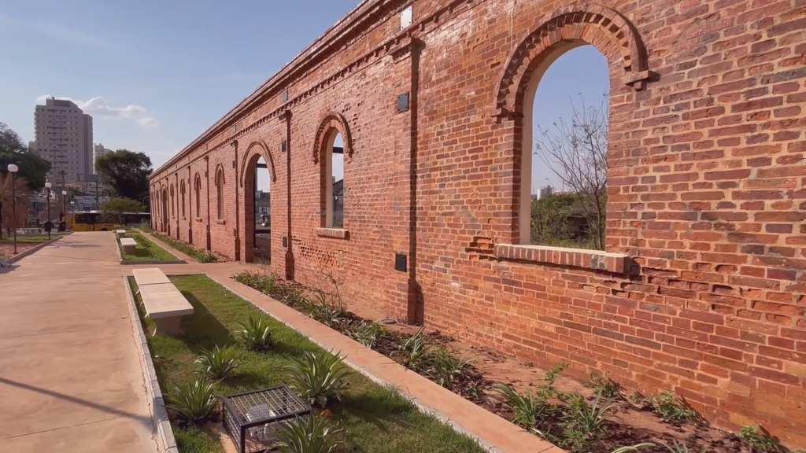

SOBRE LIMEIRA
Aqui você verá como Limeira foi criada.

Origem
A cidade de Limeira, localizada no interior do estado de São Paulo, teve sua origem por volta de 1826, quando fazendeiros começaram a se estabelecer na região para o cultivo de cana-de-açúcar. O local era conhecido pela presença de muitas limeiras, árvores frutíferas que deram nome ao município.
Com o passar dos anos, o povoado cresceu em torno da Fazenda Morro Azul, uma das mais importantes propriedades da época. O desenvolvimento econômico e social atraiu novos moradores e comerciantes, e em 1842 foi criada a Freguesia de Nossa Senhora das Dores de Tatuibi, dando início à formação da cidade.
DESENVOLVIMENTO
- Impulsionada pelo cultivo do café no século XIX
- Recebeu grande influência dos imigrantes italianos
- Tornou-se um importante centro agrícola do interior paulista
- Desenvolveu uma identidade cultural rica e diversa
ATUALIDADE
- Destaque na indústria metalúrgica e de joias folheadas
- Reconhecida como “Capital da Joia Folheada”
- Possui forte comércio e setor de serviços
- Preserva suas tradições e valoriza o turismo local